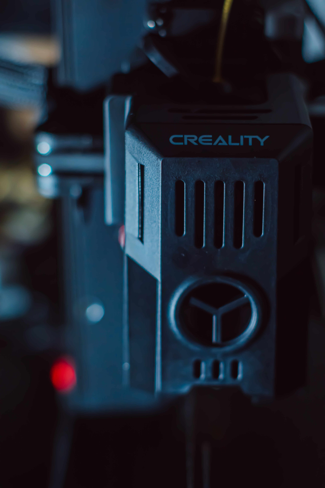

Prototipos Rápidos
Nuestro servicio de creación de prototipos rápidos te permite validar ideas y conceptos antes de la producción en serie. Con tecnología de última generación, garantizamos precisión y agilidad en cada etapa del proceso.

Detalles Técnicos
- Materiales: PLA, ABS, PETG, y más.
- Rango de Tamaño: Hasta 30x30x30 cm.
- Precisión: Hasta 0.1 mm.

Proceso de Trabajo
1. Envío del diseño.
2. Revisión y ajuste del diseño.
3. Impresión del prototipo.
4. Revisión y entrega.
